THE ULTIMATE TACTICAL WARFARE GUIDE
Welcome to the comprehensive master handbook for army formation, stat interactions, hero synergies, and robot power armor mechanics. This guide explains the core systems in straightforward language and uses practical combat examples.
1. The Troop Triangle & Targeting Mechanics
Combat revolves around a strict Rock-Paper-Scissors hierarchy among three distinct troop types. Banners and positions are locked automatically by the system; your control lies entirely in troop composition ratios.
Shield Bearers
- Role : Primary damage absorbers (Tanks).
- Targeting Priority : Shield Bearers → Bombers → Shooters.
- Strengths & Weaknesses : Excellent against Bombers; weak against Shooters.
Bombers
- Role: Balanced units specialized in backline disruption and tactical bursts.
- Targeting Priority : Shield Bearers (or 20% chance to jump directly to Shooters) → Bombers → Shooters.
- Strengths & Weaknesses : Excellent against Shooters; weak against Shield Bearers.
Example 1: If your enemy relies heavily on Bombers to deal damage, sending a heavy front line of Shield Bearers will mitigate incoming hits and absorb the assault.
Example 2: If you send Shield Bearers against an army composed mostly of Shooters, your Shield Bearers will melt rapidly because Shooters naturally shred their defense.
Shooters
Example 1: Facing a heavy turtle setup with max Shield Bearers? Loading your march with Shooters will shred their massive health pool faster than any other unit.
Example 2: If enemy Bombers bypass or break through your frontline, your Shooters will take massive counter-damage due to their structural weakness against Bombers.
2. Stat Interactions & Damage Dynamics
Understanding how stats balance each other is essential for optimizing build power thresholds.
| Stat | What It Does | Attack (ATK) | Dictates raw offensive damage. Higher ATK forces more enemy troops to trigger a "kill check." | Defense (DEF) | Directly mitigates incoming raw damage from enemy ATK. | Health (HP) | Dictates individual unit hitpoints. High HP keeps troops fighting longer and directly prevents troop death. | Lethality | A specialized damage parameter that bypasses standard defense armor to lower the threshold needed to permanently incapacitate/kill a unit. | Tactical Damage | Flat/extra damage triggered when specific skill conditions are met. Calculated completely independently from standard basic attack calculations and added on top of total damage. |
|---|
How Stats Counter Each Other
- HP + DEF vs. Attack: High HP and DEF scale together to reduce incoming raw damage and extend your march's battle lifetime.
- HP + DEF vs. Lethality: High HP and DEF raise the Lethal Damage Threshold, making it significantly harder for enemy Lethality rolls to succeed.
Example 1 (Stat Countering): If an opponent stacks massive Lethality to force instant kills, increasing your army's HP and DEF raises the execution threshold. This prevents the opponent's Lethality roll from initiating troop loss checks.
Example 2 (Tactical Damage): A hero ability dealing "150% Extra Tactical Damage" calculates that damage separately from basic armor calculations. Even if the enemy has massive basic DEF, the Tactical Damage lands clean flat damage on top of your normal attack turn.
3. Deciphering the Battle Report
After every clash, battle details break down troop states into five distinct categories:
| Report Term | Definition | Impact on Player | Total Troops | Entire force brought into battle. | Starting baseline. | Loss | Troops permanently killed in action. | Cannot be recovered; requires new troop training. |
|---|---|---|
| Heavily Wounded | Troops whose HP reached 0 and were sent to Hospital. | Recoverable via resources and time (or Recruitment Hall if Hospital is full). |
| Lightly Wounded | Troops that took partial damage but avoided Hospital. | Recover 100% HP automatically upon returning to base. |
| Survived | Troops that took zero damage during combat. | Ready for immediate deployment. |
Example: Out of a 100,000 troop march, a battle report showing 10,000 Lightly Wounded, 20,000 Heavily Wounded, and 0 Loss means you suffered zero permanent casualties. Your 10,000 Lightly Wounded are instantly healed at base, while your 20,000 Heavily Wounded reside safely in your Hospital.
4. PvP Battles & Defender's Advantage
PvP encounters follow a strict turn-based framework with specific positional rules and defensive safety nets.
Turn Mechanics & Position Rules
- Initiator Advantage: The attacking player always moves first in Turn 1.
- Hero Execution Order: Heroes act based on their order in your formation, moving from Left to Right (Leftmost Hero moves first).
- Passive Warskill Activation: Any passive warskill activates immediately at the start of that hero's action step before launching an attack.
- 40% Incapacitation Cap: Battles end instantly when 40% of either side's total troops are incapacitated.
Attacking vs. Defending Dynamics
- Defender's Advantage: When defending your base, any troop that would normally die due to enemy Lethality is automatically converted into a Heavily Wounded troop—as long as your Hospital has available capacity.
- The "Hidden Kill" Effect: As a defender, your post-battle report will display Zero Loss even if the attacker stacked high Lethality. However, those kills are recorded in the attacker's detail metrics as "should be killed troops" that were redirected to your Hospital.
- Full Hospital Penalty: The moment your Hospital reaches 100% capacity, Defender's Advantage deactivates. All subsequent lethal hits instantly convert to permanent Loss.
- Defender's Lethality: A defender's Lethality operates at 100% full fatality against an attacker from turn 1, inflicting instant permanent kills relative to the attacker's HP and DEF.
Example 1 (Defending): You get attacked by a high-Lethality player. Your battle report shows 0 Losses and 15,000 Heavily Wounded. Because your Hospital was empty, the game converted 15,000 lethal kills into hospital admissions.
Example 2 (Attacking): You launch a solo attack against an enemy base. Because you are the attacker, you do NOT get Defender's Advantage. Any lethal damage dealt by the defender instantly results in permanent Loss on your report.
5. Hero Index & Class Synergies
Each deployment march accommodates up to 3 Heroes (must be 1 Bomber, 1 Shield, and 1 Shooter) and 1 Robot Power Armor.
Bomber Heroes
- Photon Shield: Reduces enemy troop Lethality by 20%.
- Clever Tuning: Reduces enemy DEF by 20%.
- Adaptive Warfare: When fighting a higher-Power enemy, increases allied DEF by 30%.
- Exclusive Equipment: Solo attacks → Allied troops gain +16% ATK.
Synergy Example: Outstanding defensive choice when fighting stronger opponents. Pairing Alph against a higher-Power march triggers a 30% DEF boost while suppressing enemy Lethality by 20%.
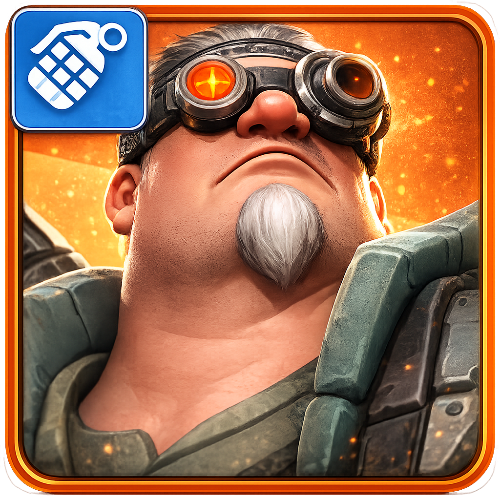
2. Lanchester (Machinist)- Adaptive Transformation: If enemy initial Power > ours, increases allied HP by 25%. Otherwise, increases allied Lethality by 30%.
- Structural Analysis: All troops have a 20% chance to Stun enemies for 1 round upon attacking.
- Kinetic Offset: Reduces enemy troop Damage by 20%.
- Exclusive Equipment (Mech Ascension Lv.5): Defending → Allied troops gain +16% DEF.
Synergy Example: Excellent control unit. The 20% Stun chance disrupts enemy turn cycles, while the conditional stat shifts adapt to both offensive bullying and defensive turtle strategies.
 3. Koschevoi (Magic Gunner)
3. Koschevoi (Magic Gunner)
- Precision Strike: Increases allied troop Damage by 25%.
- Cannon Barrage: Bombers deal an extra 50% Tactical DMG each round.
- Artillery Support: Increases Bomber ATK by 30% and DEF by 15%.
- Exclusive Equipment (Surveillance Probe Lv.5): Solo attacks → Allied troops gain +16% DEF.
Synergy Example: Pure Bomber damage amplifier. Pairs exceptionally well with Tactical DMG scaling setups like Bastion Power Armor to maximize flat damage output every single round.
- Curse: Reduces enemy DEF by 20%.
- Evacuation: 20% chance each round to become immune to all Damage.
- Erosion: 50% chance upon attacking to increase allied Damage by 50%.
- Exclusive Equipment (Nether Nectar Lv.5): Rally attacks → Allied troops gain +16% Lethality.
Synergy Example: High-variance burst hero. When Erosion triggers alongside a Rally Attack, your entire army's damage potential spikes dramatically.
 5. Wukong (Monkey King)
5. Wukong (Monkey King)
- Calamity Inferno: Every 3 rounds, Bombers deal Tactical DMG equal to 150% ATK.
- Battle Fervor: Increases Bomber Damage by 25%.
- Battle Hardened: Increases all allied troop Damage by 25%.
- Exclusive Equipment (Divine Power Lv.5): Rally attacks → Allied troops gain +16% Lethality.
Synergy Example: Every 3rd round, Wukong delivers a devastating 150% Tactical burst. Combine with heroes that increase enemy Damage Taken to amplify this burst.
 6. Worrell (Paradox Engine)
6. Worrell (Paradox Engine)
- Charged Launch: Increases Basic Attack Damage by 25% for all troops.
- Double Lash: Bombers have a 50% chance to trigger a Combo (extra basic attack) when using basic attacks.
- Combat Simulation: Simulates an equal-troop battle; if won, increases Bomber ATK by 75% in actual combat.
- Exclusive Equipment (Punisher's Grip Lv.5): Solo combat → Allied troops gain +16% ATK.
Synergy Example: Basic Attack specialist. Worrell's 50% Combo chance allows Bombers to hit twice in a single turn, doubling basic attack value.
 7. Ryuichi Ito (Ghost Ninja)
7. Ryuichi Ito (Ghost Ninja)
- Weakness Detection: 25% chance to land a Critical Strike during basic attacks.
- Agile Stance: 20% chance to evade enemy basic attacks.
- Combo Strikes: Every 2 basic attacks, Bombers launch an extra basic attack dealing 100% Damage.
- Exclusive Equipment (Pinpoint Assault Lv.5): Rally attacks → Allied troops gain +16% ATK.
Synergy Example: High mobility and sustain carry. Evading attacks mitigates incoming damage, while guaranteed extra attacks trigger consistently every 2 turns.
- Stealth Assault: Bomber attacks increase target's Tactical DMG taken by 50% for 1 round.
- Intel Support: Increases allied troop HP by 25%.
- Strategic Chain: 25% chance per round for Bombers to deal 100% ATK Tactical DMG to all enemies.
- Exclusive Equipment (Careful Ambush Lv.5): Defending → Allied troops gain +16% ATK.
Synergy Example: Essential enabler for Tactical DMG builds. Lee's 50% Tactical DMG debuff primes targets for massive follow-up hits from Shooters or fellow Bombers.
Shield Heroes
 1. Tyronn (Scarlet Butcher)
1. Tyronn (Scarlet Butcher)
- Cripple: Increases enemy Damage taken by 25%.
- Blood Feast: Increases allied Lethality by 25%.
- Death Toll: 20% chance to Stun the enemy for 1 round when attacking.
- Exclusive Equipment (Bull Rush Lv.5): Rally attacks → Allied troops gain +16% ATK.
Synergy Example: Offensive frontline tank. Applying a flat +25% Damage taken debuff to enemies boosts the damage of your Shooters and Bombers simultaneously.
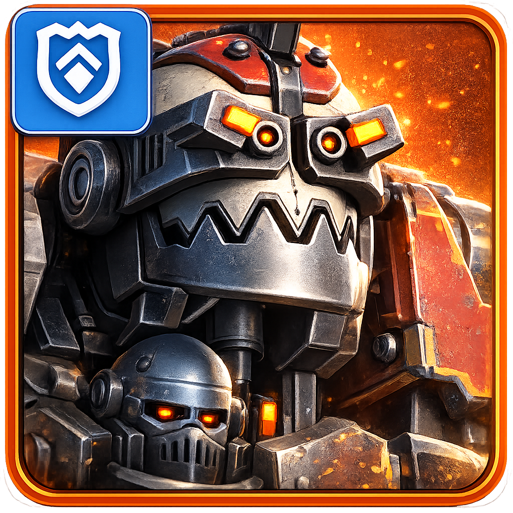
2. Zoltan (the Redeemer)- Cycle Protection: On round numbers that are multiples of 4 (Turn 4, 8, 12...), reduces all incoming damage taken by 80%.
- Mecha Upgrade: Increases Shieldbearer Damage by 100%.
- Behemoth's Wrath: Shieldbearers retaliate after taking each basic attack, dealing 30% Tactical DMG.
- Exclusive Equipment (Redemption Shield Lv.5): Defending → Allied troops gain +16% DEF.
Synergy Example: Defensive powerhouse. Retaliating with 30% Tactical DMG every time Shieldbearers take a basic hit punishes multi-hitting enemy comps.
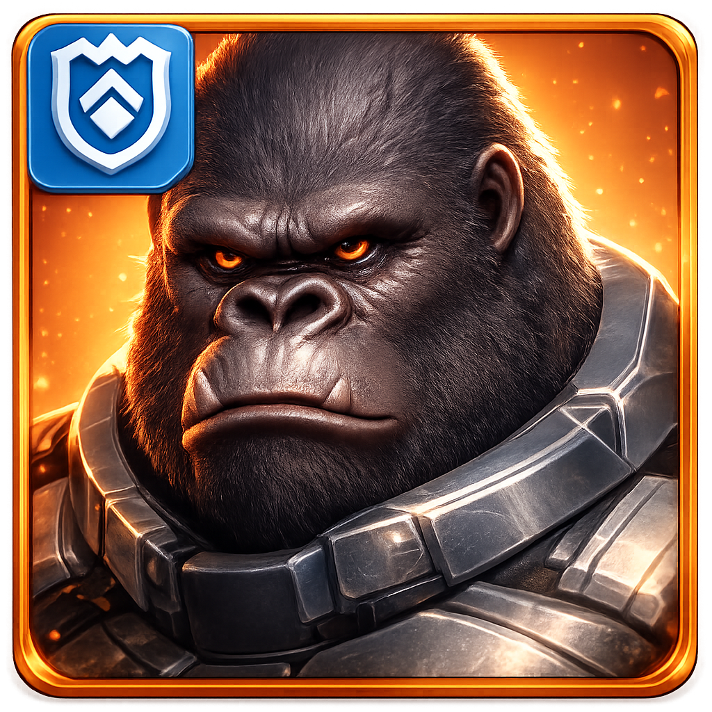
3. Caesar (Apex Ape)- Gene Activity: 20% chance at round end to revive soldiers lost during that round.
- Impact Barrier: Increases allied DEF by 25%.
- Crushing Blow: Reduces enemy troop HP by 20%.
- Exclusive Equipment (Avenger's Fury Lv.5): Defending → Allied troops gain +16% ATK.
Synergy Example: Exceptional attrition tank. Reviving 20% of fallen troops at turn end directly counters high enemy ATK pressure.
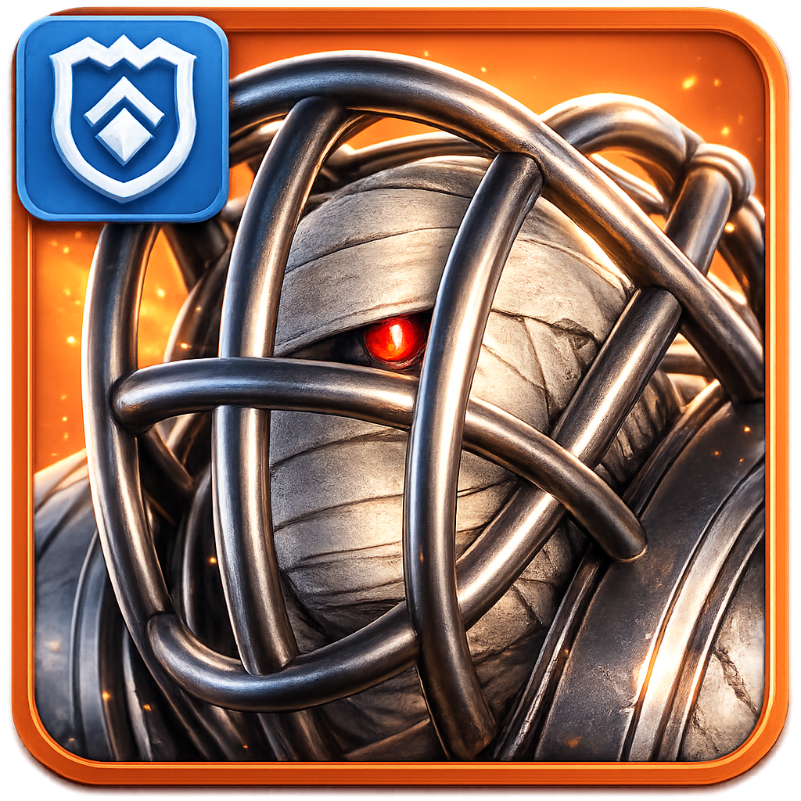
4. Marcus (Stitched Monster)- Monster Intimidation: On round numbers that are multiples of 2, reduces incoming basic attack damage by 50%.
- Self-Sacrificing Battle: On round numbers that are multiples of 3, Shieldbearers skip their attack, allowing Shooters and Bombers to launch 1 extra basic attack dealing 150% DMG.
- Death Aura: Reduces Shieldbearer damage taken by 15% and increases Bomber damage dealt by 25%.
- Exclusive Equipment (Flesh Revival Lv.5): Defending → Allied troops gain +16% HP.
Synergy Example: The ultimate sacrifice enabler. Skipping Shieldbearer attacks on turn 3 lets your Shooters and Bombers execute devestating 150% extra basic attacks.
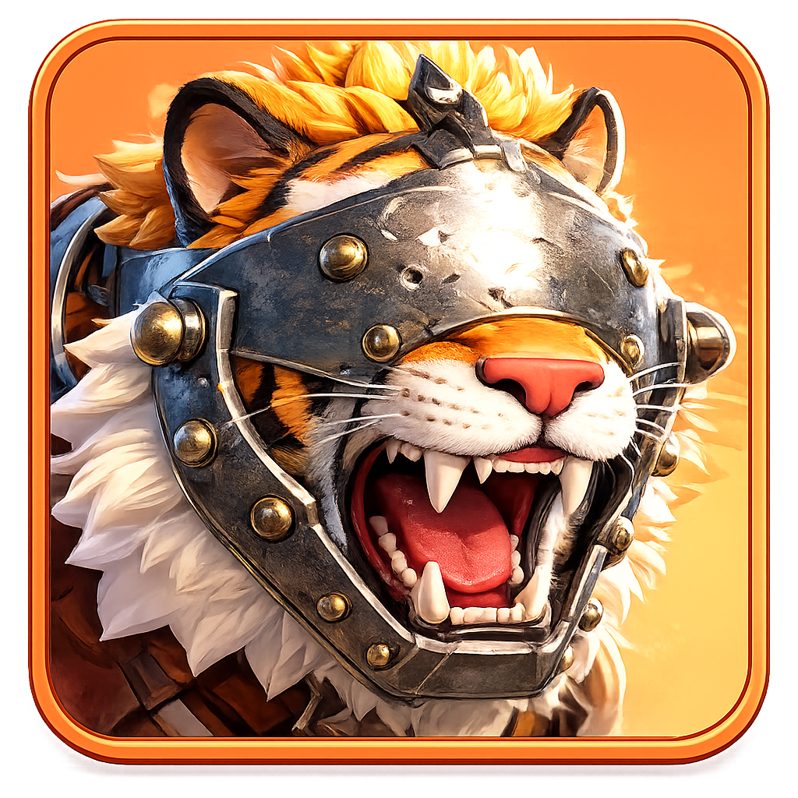
5. Otto (Tiger King)- Natural Hymn: Odd rounds → -60% Shieldbearer Tactical DMG taken. Even rounds → -40% Shieldbearer Basic Attack DMG taken.
- Iron Protection: 83% chance each round to Shelter 1 troop type, reducing their damage taken by 75%.
- Forest Echo: Increases allied Tactical DMG by 75%.
- Exclusive Equipment (Entrenched Position Lv.5): Defending → Allied troops gain +16% DEF.
Synergy Example: Massive tactical damage buffer (+75%) while providing an 83% chance to protect a random troop type with 75% mitigation every turn.
 6. Xuanming (Grove Drunkard)
6. Xuanming (Grove Drunkard)
- Mountain Cleaver: Increases allied Lethality by 25%.
- Ironclad Protection: Increases allied DEF by 25%.
- Vital Surge: Reduces damage taken by 20%. If army size drops to ≤80%, recovers 10% of Lightly Wounded soldiers post-battle.
- Exclusive Equipment (Qimen Formation Lv.2): Defending → Allied troops gain +16% ATK.
Synergy Example: Durable anchor providing passive DEF, Lethality, and post-battle troop recovery to minimize hospital load.
Shooter Heroes
- Stealth Cloak: Reduces enemy ATK by 20%.
- Mind's Eye: Increases allied ATK by 25%.
- Banshee's Lament: Increases allied Damage by 20% (+10% extra if enemy Power is lower than ours).
- Exclusive Equipment (Whispering Death Lv.5): Rally attacks → Allied troops gain +16% Lethality.
Synergy Example: Premier offensive stat buffer that weakens enemy ATK while maximizing allied damage against weaker marches.
 2. Drake (Hell Warrior)
2. Drake (Hell Warrior)
- Charged Barrage: Every multiple of 3 rounds, Shooters deal an extra 110% Tactical DMG at round end.
- Fear Aura: 50% chance to reduce enemy damage dealt by 40%.
- Infernal Surge: Increases allied ATK by 14% and Lethality by 12%.
- Exclusive Equipment (Break Out Lv.5): Defending → Allied troops gain +16% Lethality.
Synergy Example: Excellent defense and burst unit. The 50% chance to cut enemy damage by 40% protects your frontline while preparing turn 3 bursts.
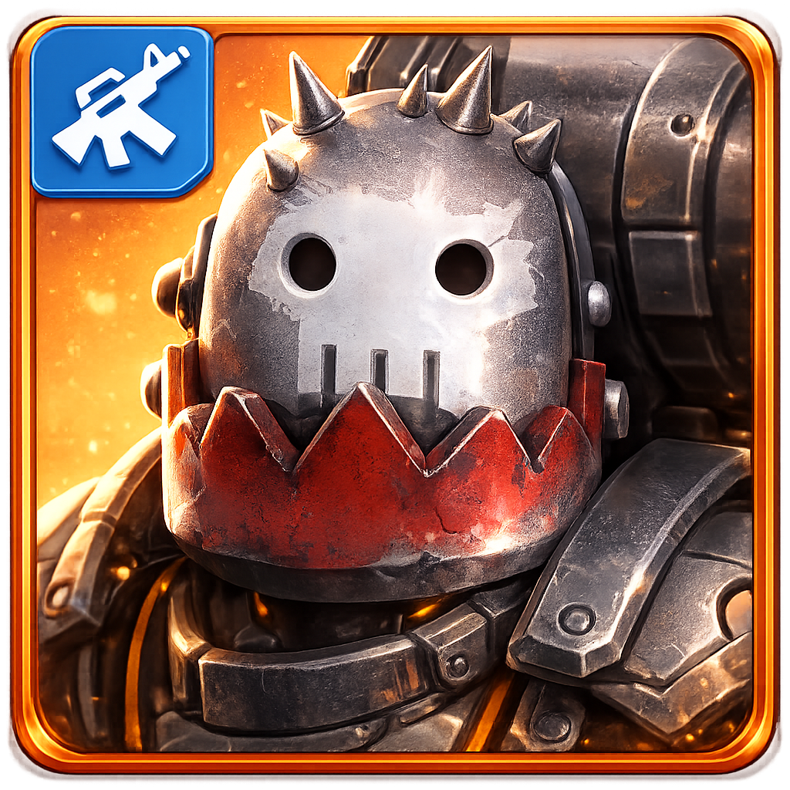
3. Sawyer (the Collector)- Rust Erosion: Reduces enemy HP by 20%.
- Rage Strike: Increases allied ATK by 25%.
- Steel Rend: Increases allied HP by 25%. If enemy drops below 70% force, debuffs enemy Stat Provider DEF by 5% for 5 seconds.
- Exclusive Equipment (Howling Engine Lv.5): Rally attacks → Allied troops gain +16% HP.
Synergy Example: Stat-stripping support hero that reduces enemy HP right at battle start.
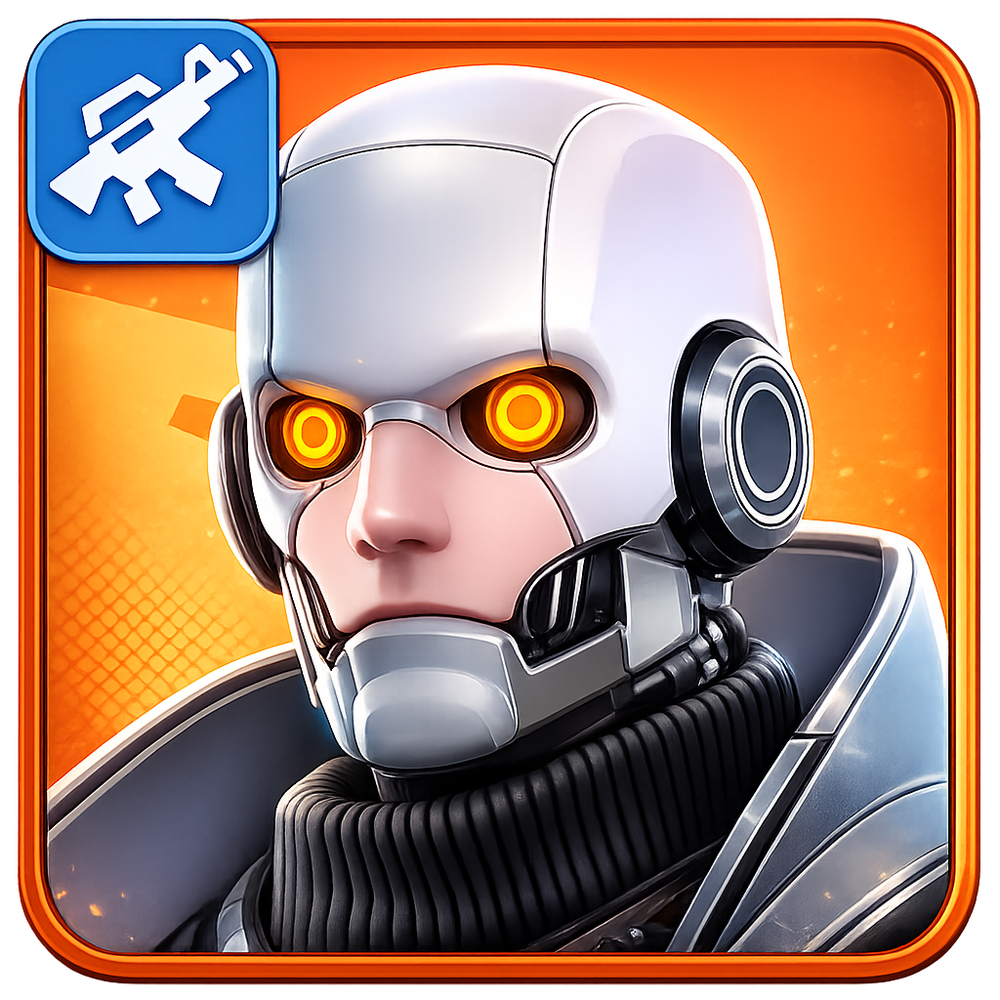
4. Edwin (the Judge)- Iron Body: Reduces Shieldbearer damage taken by 20% and Shooter damage taken by 30%.
- Command Shooting: Whenever enemies take Tactical DMG, Shooters have a 30% chance to launch an extra basic attack (25% ATK).
- Judgment of Justice: Every multiple of 3 rounds, Shooters deal 125% Tactical DMG (scales up by +15% for every multiple of 3 enemy troop size exceeds ours, up to +75%).
- Exclusive Equipment (Resolute Heart Lv.5): Solo attacks → Allied troops gain +16% HP.
Synergy Example: Synergizes perfectly with Lee or Koschevoi. When Lee triggers Tactical DMG, Edwin's Command Shooting fires extra basic attacks out of turn.
 5. Kate (Dream Chaser)
5. Kate (Dream Chaser)
- Sprint Signal: Increases allied ATK by 25%.
- Position Block: Reduces enemy Shieldbearer Lethality by 20% and Bomber Lethality by 25%.
- Corner Overtake: Every 4 rounds, allied Damage increases by 43% for 2 rounds (scales +1% higher per 10% lost troops).
- Exclusive Equipment (Home Advantage Lv.5): Defending → Allied troops gain +16% Lethality.
Synergy Example: Anti-Lethality defender. Suppresses enemy Shield and Bomber Lethality while providing massive late-game comeback damage on turn 4.
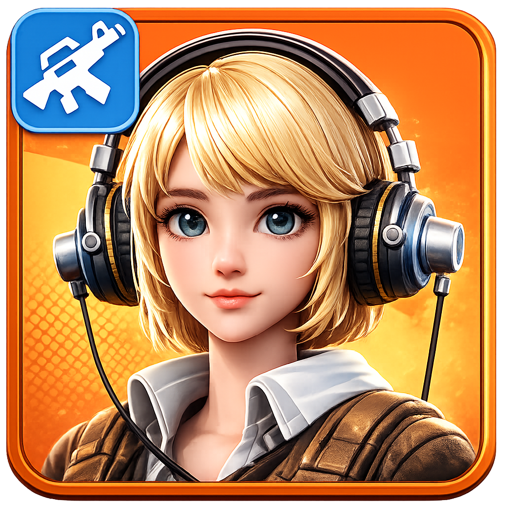
6. Ada (Duo Face)- Sweet Smile: Reduces enemy DEF by 10% and HP by 15%.
- Continuous Destruction: When Shieldbearers and Bombers land basic attacks, Shooters have a 25% chance to follow up with a 70% ATK basic attack.
- Firepower Barrage: After every 4 attacks, Shooters deal a 50% ATK basic attack to ALL enemy units.
- Exclusive Equipment (Firearm Mastery Lv.5): Rally attacks → Allied troops gain +16% ATK.
Synergy Example: Relentless attack trigger hero. Works amazingly with Worrell (Bomber double basic attacks), triggering endless out-of-turn Shooter follow-ups.
 7. Veronica (Inferna Dancer)
7. Veronica (Inferna Dancer)
- Darkness Blade: 50% chance upon attacking to increase enemy Damage Taken by 50%.
- Veiling Mist: Increases allied Lethality by 25%.
- Phantom Steps: Increases allied DEF by 25%.
- Exclusive Equipment (Scarlet Pursuit Lv.5): Solo attacks → Allied troops gain +16% Lethality.
Synergy Example: High Lethality enabler. Stacking Veronica's +25% Lethality with high-ATK marches forces fast kill checks against opponents.
6. Power Armor / Robot Arsenal
Each march is led by 1 Power Armor. Activate Core Link nodes to unlock game-changing Exclusive Equipments.
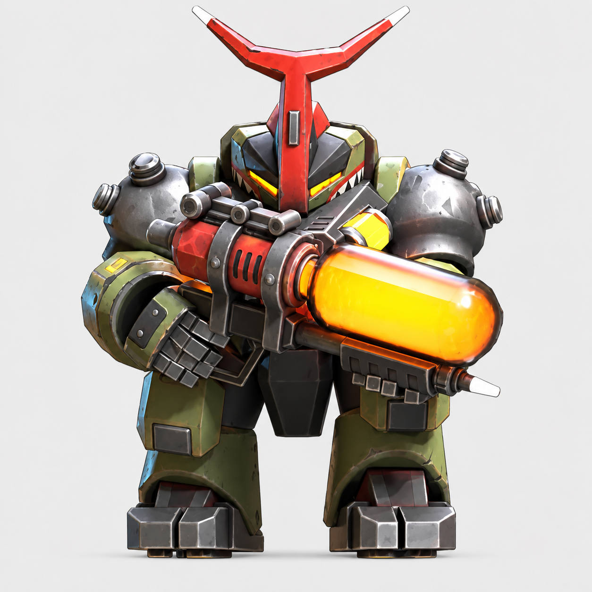
1. Musashimaru
Base Stats: +76% Shooter ATK / +76% Shooter DEF.
Core Link Skill (15 Nodes): Increases Shieldbearers' and Shooters' Lethality by 30% and reduces their Damage taken by 45%.
Best Pairing: Hybrid Shooter/Shield setups. Pairing Musashimaru with Edwin and Zoltan grants massive 45% damage mitigation to your front and back lines.
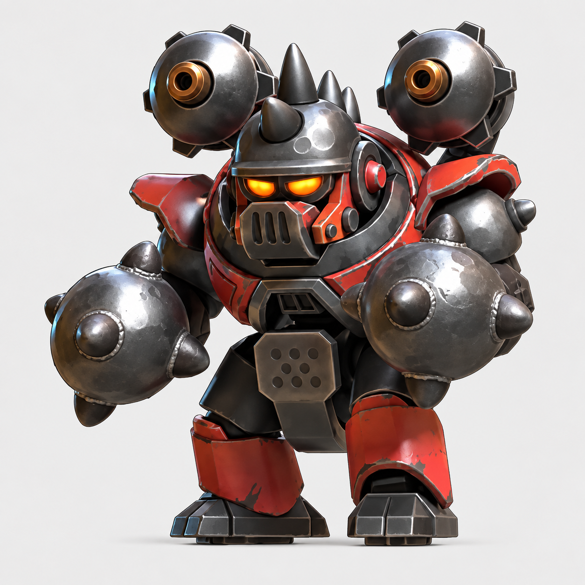
2. Bastion
Base Stats: +76% Bomber ATK / +76% Bomber DEF.
Core Link Skill (15 Nodes): Increases troop DEF by 40% and Tactical DMG by 50%. On rounds that are NOT multiples of 3, Tactical DMG increases by an additional 230% (Total +280% Tactical DMG boost).
Best Pairing: Tactical Bomber comps (Wukong, Koschevoi, Lee). Deals astronomical flat damage on turns 1, 2, 4, 5, 7, 8, etc.
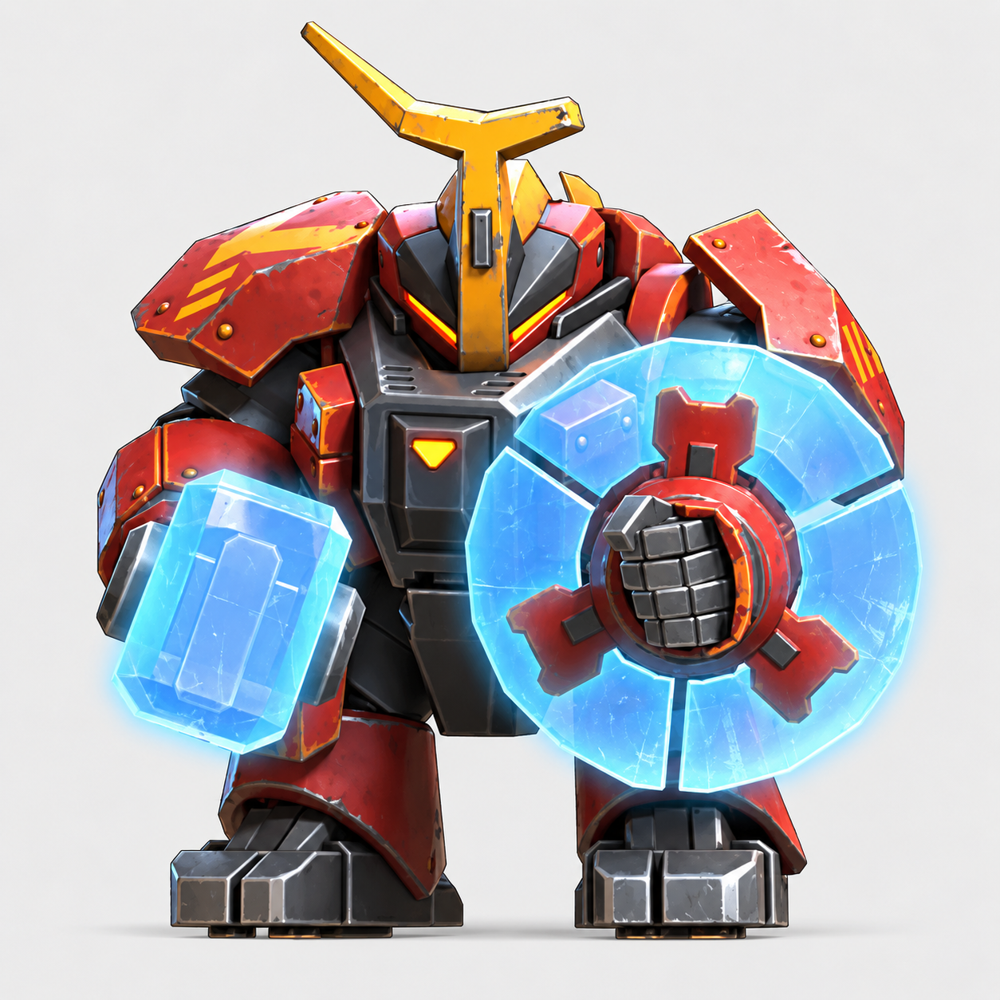
3. Yokozuna
Base Stats: +76% Bomber ATK / +76% Bomber DEF.
Core Link Skill (15 Nodes): Increases troop HP by 30%. After Bombers attack 3 times, Shieldbearers take 60% less DMG and Bombers deal 30% more DMG for 2 rounds.
Best Pairing: Fast-attacking Bombers like Worrell or Ryuichi Ito.
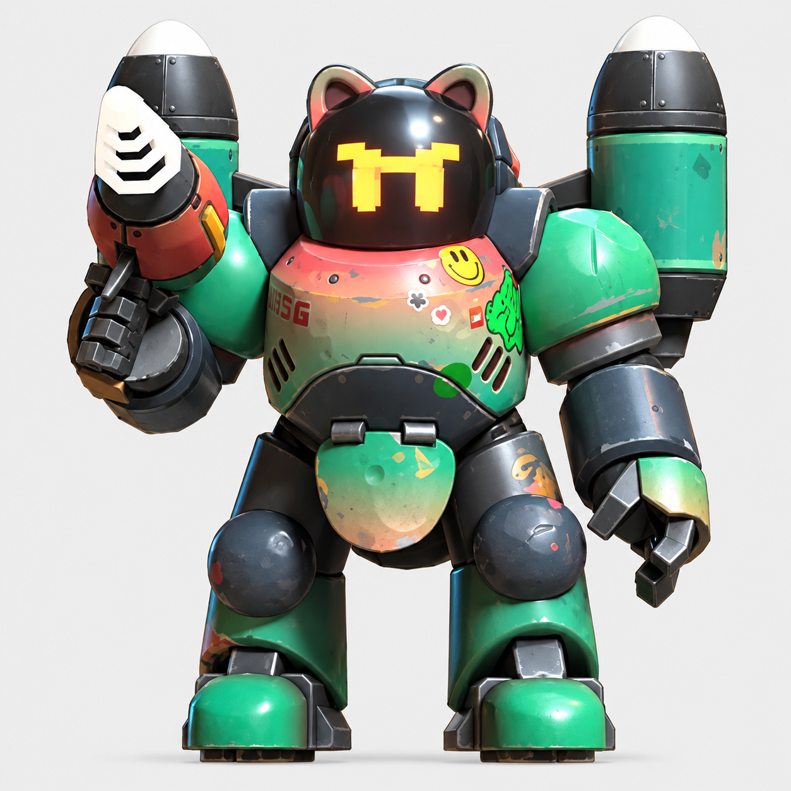
4. Halo
Base Stats: +76% Bomber ATK / +76% Bomber DEF.
Core Link Skill (15 Nodes): Increases troop Lethality by 30%. Every 5 attacks launched by Bombers, reduces all troop Damage taken by 25% and boosts Bomber Lethality by +50% for 2 rounds.
Best Pairing: High-Lethality Bomber marches (e.g., Whisper, Wukong). Stacks Lethality up to +80% during peak turns.

5. Phantom Cat
Base Stats: +76% Shooter ATK / +76% Shooter DEF.
Core Link Skill (15 Nodes): Increases troop Lethality by 37.50%. Every 4 attacks launched by Shooters triggers an extra 80% Tactical DMG hit.
Best Pairing: Multi-striking Shooter comps featuring Ada or Edwin.
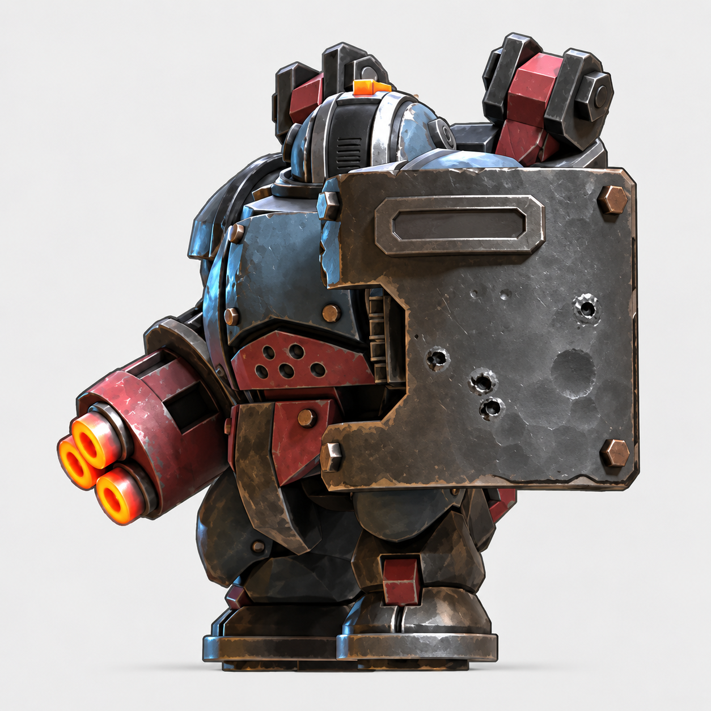
6. Atlas
Base Stats: +65% Shieldbearer ATK / +65% Shieldbearer DEF.
Core Link Skill (12 Nodes): Increases all troop HP by 30%, boosts Shieldbearer Damage by 40%, and reduces Shieldbearer Damage taken from Bombers by 20%.
Best Pairing: Pure frontline defense builds.

7. Infercore
Base Stats: +65% Bomber ATK / +65% Shooter ATK.
Core Link Skill (12 Nodes): Increases both Bombers' and Shooters' Lethality by 60%.
Best Pairing: Glass-cannon offensive rallies. Combining dual DPS ATK bonuses with a massive +60% Lethality boost ignores enemy armor and inflicts heavy casualties.
The Master Guide to Solo Attack
1. The Solo Attack Equipment Filter
Always attempt to pick your Bomber and Shooter from the Solo Equipment List to lock in two guaranteed +16% army-wide stat buffs.
| Class | Hero | Equipment | Trigger |
|---|---|---|---|
| Bomber | Worrell | +16% Allied Troop ATK | Solo Attack |
| Bomber |  Alph Alph | +16% Allied Troop ATK | Solo Attack |
| Bomber | Koschevoi | +16% Allied Troop DEF | Solo Attack |
| Shooter | Veronica | +16% Allied Troop Lethality | Solo Attack |
| Shooter | Edwin | +16% Allied Troop HP | Solo Attack |
Note: None of the 6 Shield Heroes possess a Solo Attack equipment trigger—all Shield equipment skills trigger during Defending or Rally Attacks. Therefore, for your Shield slot in Solo Attacks, you choose purely based on baseline skill synergies.
The 2-Step Hero Selection Process for Solo Attacks
- Step 1 (Equipment Activation): Always attempt to pick your Bomber and Shooter from the Solo Equipment List to lock in two guaranteed +16% army-wide stat buffs.
- Step 2 (Skill Synergy): Compare the active/passive skills of those equipment-matched heroes to hard-counter the scouted target.
2. Optimized Solo Attack Formations & Examples
Step 1: Equipment Filter (Select Solo-Active Heroes)
Bomber Slot → Worrell (+16% ATK), Alph (+16% ATK), or Koschevoi (+16% DEF)
Shooter Slot → Veronica (+16% Lethality) or Edwin (+16% HP)
Shield Slot → Best Mechanical Complement (e.g., Caesar, Otto, Tyronn)
Step 2: Skill Synergy Match vs. Scout Report
FORMATION 1: The First-Strike Tactical Executioner
Primary Focus: High raw damage, instant turn-1 stat suppression, and multi-hit basic attack combos.
- Bomber Choice: Worrell (Equipment: +16% ATK active in Solo Combat). Skills grant +25% Basic Attack DMG and a 50% Combo chance for Bombers.
- Shooter Choice: Edwin (Equipment: +16% HP active in Solo Attack). Skills grant +20% Shieldbearer / +30% Shooter damage reduction and turn-3 Tactical bursts.
- Shield Choice: Caesar (Best Mechanical Fit). Skills lower enemy HP by 20% right at battle start and provide a 20% chance to revive fallen troops.
Power Armor / Robot: Bastion (+76% Bomber ATK/DEF, +280% Tactical DMG on non-multiple of 3 turns) or Phantom Cat (+76% Shooter ATK/DEF, +37.5% Lethality).
Active Equipment Buffs: +16% Army ATK (Worrell Equipment); +16% Army HP (Edwin Equipment); Total Buffs: +16% ATK, +16% HP.
Scenario A: Striking an Equal-Power Balanced Base
Scout Profile: Equal power, balanced troop ratio (33% / 33% / 33%), high baseline health.
The Play: Deploy Worrell + Edwin + Caesar with Bastion.
Step-by-Step Execution:
- Pre-Battle Buff Phase: Worrell's equipment grants +16% ATK and Edwin's equipment grants +16% HP to your entire army.
- Battle Start (Debuff Application): Caesar's Crushing Blow immediately cuts enemy base HP by 20%.
- Turn 1 (Attacker Advantage): Your march moves first. Worrell attacks with a 50% chance to trigger Double Lash, landing a second full basic attack.
- Tactical Amplification: Because Turn 1 is not a multiple of 3, Bastion boosts all Tactical Damage by 280%. Worrell's double basic attack paired with Edwin's defensive survival baseline melts the enemy frontline before they can retaliate.
FORMATION 2: The Lethality Armor-Shredder
Primary Focus: Bypassing enemy Defense to trigger instant troop kill checks against high-HP targets.
- Bomber Choice: Alph (Equipment: +16% ATK active in Solo Combat). Skills reduce enemy Lethality by 20% and reduce enemy DEF by 20%.
- Shooter Choice: Veronica (Equipment: +16% Lethality active in Solo Attack). Skills grant +25% Lethality, +25% DEF, and a 50% chance to increase enemy damage taken by 50%.
- Shield Choice: Tyronn (Best Mechanical Fit). Skills grant +25% Lethality and increase enemy damage taken by 25%.
Power Armor / Robot: Infercore (+65% Bomber/Shooter ATK, +60% Lethality) or Halo (+76% Bomber ATK/DEF, +30% to +80% Lethality).
Active Equipment Buffs: +16% Army ATK (Alph Equipment); +16% Army Lethality (Veronica Equipment); Total Buffs: +16% ATK, +16% Lethality.
Scenario B: Breaking a Heavy Defense Turtle (Zoltan / Otto Defenders)
Scout Profile: Heavy Shieldbearer ratio (60%), High base Defense, low offensive damage.
The Play: Deploy Alph + Veronica + Tyronn with Infercore.
Step-by-Step Execution:
- Lethality Stacking: Your army receives +16% Lethality from Veronica's equipment, +25% from Veronica's skill, +25% from Tyronn's skill, and +60% from Infercore, resulting in a massive +126% Total Army Lethality.
- Armor & Damage Suppression: Alph's Clever Tuning cuts enemy DEF by 20%, while Tyronn's Cripple increases enemy damage taken by 25%.
- Turn 1 Execution: When Veronica strikes, her 50% chance on Darkness Blade increases enemy damage taken by an additional 50% (Total +75% Damage Taken debuff on defender).
- Resolution: Your army's extreme Lethality (+126%) combined with reduced enemy armor strips away the defender's Shieldbearer wall instantly, turning what would be a long stall fight into a fast victory.
FORMATION 3: The High-Lethality Defense Counter (Anti-Trap)
Primary Focus: Attacking high-Lethality defender traps safely without suffering permanent troop Losses.
- Bomber Choice: Koschevoi (Equipment: +16% DEF active in Solo Attack). Skills grant +25% flat Damage, +30% Bomber ATK, +15% Bomber DEF, and guaranteed round-by-round Tactical Damage.
- Shooter Choice: Edwin (Equipment: +16% HP active in Solo Attack). Skills cut Shieldbearer damage taken by 20% and Shooter damage taken by 30%.
- Shield Choice: Otto (Best Mechanical Fit). Skills grant up to 75% Damage Reduction and cut incoming Tactical/Basic damage.
Power Armor / Robot: Musashimaru (+76% Shooter ATK/DEF, +30% Shield/Shooter Lethality, +45% Shield/Shooter Damage Reduction) or Atlas (+30% Army HP).
Active Equipment Buffs: +16% Army DEF (Koschevoi Equipment); +16% Army HP (Edwin Equipment); Total Buffs: +16% DEF, +16% HP.
Scenario C: Attacking a Defender Stacking High Lethality Gear
Scout Profile: Moderate troops, but extremely high Lethality stats designed to inflict permanent deaths on solo attackers.
The Play: Deploy Koschevoi + Edwin + Otto with Musashimaru.
Step-by-Step Execution:
- Survival Threshold Elevation: Koschevoi's equipment grants +16% DEF, Edwin's equipment grants +16% HP, and Musashimaru reduces incoming damage to Shieldbearers and Shooters by 45%.
- Turn-by-Turn Mitigation: Otto's Iron Protection triggers an 83% chance each round to grant a troop type 75% Damage Reduction, while Edwin cuts incoming Shooter damage by 30%.
- Counter-Strike Execution: Because your HP and Defense baseline is boosted by equipment and skill reduction layers, the defender's Lethality rolls fail to reach the Lethal Damage Threshold.
- Resolution: Koschevoi's guaranteed Cannon Barrage (50% extra Tactical Damage every round) wears down the enemy forces safely, securing the win with 0 permanent Losses.
3. Scout Analysis & Counter Selection with Equipment Priority
When evaluating a scout report, use this decision framework to select your heroes:
Summary of Hero Priority for Solo Attacks
- Always lock in equipment triggers first: Choosing Worrell, Alph, or Koschevoi for Bomber, and Veronica or Edwin for Shooter ensures two active +16% equipment buffs.
- Adapt skills second: Use Worrell/Edwin for raw damage and tactical bursts, Alph/Veronica for armor-shredding and high Lethality, or Koschevoi/Edwin for defense against high-damage traps.
- Pick the Shield hero to complement the team: Since Shield heroes lack Solo Attack equipment triggers, select Caesar for HP reduction, Tyronn for debuffs and Lethality, or Otto for damage reduction.
The Master Guide to Solo Defense
Solo Defense is where defenders hold the ultimate structural advantage in the game. When defending your base, Defender’s Advantage activates: as long as your Hospital has available capacity, any of your troops that would normally die from enemy Lethality are automatically converted into Heavily Wounded troops (0 permanent Losses on your report).
Meanwhile, your own Lethality operates at 100% full fatality against the attacker, sending their troops directly to the graveyard as permanent Losses.
1. The Triple-Equipment Defensive Filter
Unlike Solo Attacks where Shield heroes lack solo equipment triggers, Solo Defense allows you to activate Exclusive Equipment (Lv.5) across ALL THREE hero slots simultaneously.
This gives your defense a free baseline boost of up to +48% in army-wide stats before skills or power armor are calculated.
| Class | Hero | Defensive Equipment (Lv.5) | Trigger Condition |
|---|---|---|---|
| Bomber | Lanchester | +16% Allied Troop DEF | While Defending |
| Bomber | Lee | +16% Allied Troop ATK | While Defending |
| Shield | Marcus | +16% Allied Troop HP | While Defending |
2. Defensive Formation Archetypes & Step-by-Step Scenarios
ARCHETYPE 1: The Iron Fortress (Maximum Damage Mitigation)
Primary Focus: Neutralizing incoming attack power, protecting Hospital capacity, and making your frontline impossible to break.
- Bomber: Lanchester (Eq: +16% DEF). Grants +25% HP if enemy Power is higher, provides a 20% Stun chance, and cuts enemy Damage by 20%.
- Shield: Otto (Eq: +16% DEF). Gives an 83% chance every round to grant 75% Damage Reduction to a troop type, plus alternating 60%/40% mitigation.
- Shooter: Kate (Eq: +16% Lethality). Cuts enemy Shieldbearer Lethality by 20% and Bomber Lethality by 25%. Boosts army Damage by +43% starting on Turn 4.
Power Armor / Robot: Musashimaru (+76% Shooter ATK/DEF, +30% Shield/Shooter Lethality, +45% Damage Reduction for Shield/Shooter).
Total Active Equipment Buffs: +16% Army DEF (Lanchester Equipment); +16% Army DEF (Otto Equipment); +16% Army Lethality (Kate Equipment); Total Stat Boost: +32% Army DEF, +16% Army Lethality.
Scenario A: Defending Against a High-Power Solo Attacker
Attack Profile: A whale/high-power player launches a solo march with high ATK stats, attempting to brute-force your wall.
Defensive Troop Ratio: 50% Shield / 25% Bomber / 25% Shooter.
The Setup: Deploy Lanchester + Otto + Kate with Musashimaru.
Step-by-Step Combat Execution:
- Pre-Battle Activation: Lanchester, Otto, and Kate trigger their equipment skills simultaneously, giving your base +32% Army DEF and +16% Army Lethality.
- Power Differential Adjustment: Because the attacker's initial power is higher, Lanchester's Adaptive Transformation triggers, boosting your entire army's HP by an extra 25%.
- Lethality Neutralization: Kate's Position Block suppresses the attacker's Bomber Lethality by 25% and Shieldbearer Lethality by 20%.
- Layered Damage Reduction: On Turn 1, Musashimaru reduces incoming damage to your Shieldbearers and Shooters by 45%. Otto's Iron Protection (83% chance) applies an additional 75% Damage Reduction to your frontline.
- Resolution: The attacker's high-ATK march hits a wall with over 80% stacked damage mitigation and boosted HP. Their attack rolls fail to trigger kill checks, resulting in 0 permanent Losses for you while your counter-attacks send their troops directly to the hospital.
ARCHETYPE 2: The Lethality Punisher (Attacker Execution Setup)
Primary Focus: Exploiting Defender's Advantage to turn incoming damage into guaranteed permanent kills against the attacker.
- Bomber: Lee (Eq: +16% ATK). Increases target Tactical DMG taken by 50% and provides a 25% chance per round to deal 100% ATK Tactical DMG to all enemies.
- Shield: Caesar (Eq: +16% ATK). Cuts enemy HP by 20% at start of battle, boosts allied DEF by 25%, and revives 20% of fallen troops at round end.
- Shooter: Drake (Eq: +16% Lethality). Grants +14% ATK and +12% Lethality passively, gives a 50% chance to cut enemy damage by 40%, and fires a Turn-3 Tactical burst (110% DMG).
Power Armor / Robot: Infercore (+65% Bomber/Shooter ATK, +60% Lethality) or Halo (+30% Lethality baseline, +50% extra Lethality after 5 Bomber attacks).
Total Active Equipment Buffs: +16% Army ATK (Lee Equipment); +16% Army ATK (Caesar Equipment); +16% Army Lethality (Drake Equipment); Total Stat Boost: +32% Army ATK, +16% Army Lethality.
Scenario B: Punishing a High-Troop / Low-HP March
Attack Profile: An opponent sends a march with massive troop numbers but weak base Defense and HP stats.
Defensive Troop Ratio: 20% Shield / 40% Bomber / 40% Shooter.
The Setup: Deploy Lee + Caesar + Drake with Infercore.
Step-by-Step Combat Execution:
- Battle Start (Stat Application): Equipment unlocks +32% Army ATK and +16% Army Lethality. Caesar's Crushing Blow immediately chops 20% off the attacker's base HP.
- Lethality Stacking: Drake (+16% Equipment, +12% Passive) combined with Infercore (+60% to Bombers and Shooters) pushes your backline Lethality boost to +88%.
- Turn 1 Counter-Strike: Lee's Stealth Assault marks the enemy, increasing their Tactical DMG taken by 50%. When Lee's Strategic Chain triggers, it hits all enemy units with 100% ATK Tactical Damage.
- Attacker Fatality Execution: Because you are defending, your +88% Lethality operates at 100% kill efficiency. The attacker's low-HP units melt under the Tactical AoE, and their battle report shows massive permanent Losses, while your wounded troops are redirected safely to your Hospital.
ARCHETYPE 3: The Turn-3 Counter-Burst Trap
Primary Focus: Absorbing early turns using heavy basic attack reduction, then wiping out the attacker on Turn 3 with synchronized extra attacks and tactical bursts.
- Bomber: Lee (Eq: +16% ATK). Increases target Tactical DMG taken by 50% for 1 round.
- Shield: Marcus (Eq: +16% HP). Cuts basic attack damage taken by 50% on even turns (Turn 2, 4...). On Turn 3, Shieldbearers skip attacking so Shooters and Bombers can fire an extra basic attack dealing 150% DMG.
- Shooter: Drake (Eq: +16% Lethality). Fires an extra tactical attack dealing 110% Tactical DMG on round numbers that are multiples of 3.
Power Armor / Robot: Bastion (+76% Bomber ATK/DEF, +40% DEF, +50% Tactical DMG) or Phantom Cat.
Total Active Equipment Buffs: +16% Army ATK (Lee Equipment); +16% Army HP (Marcus Equipment); +16% Army Lethality (Drake Equipment); Total Stat Boost: +16% ATK, +16% HP, +16% Lethality.
Scenario C: Baiting an Aggressive Shooter March
Attack Profile: An attacker scouts your base and sees a moderate defense, prompting them to send a heavy Shooter march (15% Shield / 25% Bomber / 60% Shooter) to break your wall quickly.
Defensive Troop Ratio: 30% Shield / 45% Bomber / 25% Shooter.
The Setup: Deploy Lee + Marcus + Drake with Bastion.
Step-by-Step Combat Execution:
- Turn 1 & 2 (Stalling Phase): Marcus's Monster Intimidation cuts incoming basic attack damage by 50% on Turn 2, preserving your frontline HP.
- Turn 3 Activation (The Trap Triggers):
- Marcus: Self-Sacrificing Battle activates. Your Shieldbearers skip their turn, allowing your 45% Bomber stack and 25% Shooter stack to launch an extra basic attack dealing 150% DMG.
- Lee: Increases enemy Tactical DMG taken by 50%.
- Drake: Charged Barrage triggers on Turn 3, firing an extra tactical attack for 110% Tactical DMG.
- Resolution: On Turn 3, your Bombers and Shooters hit the attacker with double basic attacks at 150% power, stacked on top of Drake's 110% Tactical burst. The incoming attacker march is wiped out in a single turn.
3. Scout Response & Defensive Matrix
When an incoming march or rally scout appears on your base, use this matrix to select your defensive hero composition and troop ratio:
| Incoming Attacker Profile | Attacker Vulnerability | Recommended Defensive Ratio | Best Hero Setup (Equipment Active) | Ideal Robot |
|---|---|---|---|---|
| Heavy Shooter March (60% Shooters) | Vulnerable to Bomber counter-damage & Turn 3 bursts | 30% Shield / 50% Bomber / 20% Shooter | Lee + Marcus + Drake (ATK / HP / Lethality) | Bastion or Halo |
| Heavy Shield March (60% Shields) | Vulnerable to Shooter DPS & Defense Reduction | 20% Shield / 20% Bomber / 60% Shooter | Lanchester + Caesar + Kate (DEF / ATK / Lethality) | Phantom Cat or Musashimaru |
| High Lethality Solo March | Stopped by HP/DEF stacking & damage reduction | 50% Shield / 25% Bomber / 25% Shooter | Lanchester + Otto + Kate (DEF / DEF / Lethality) | Musashimaru or Atlas |
| High ATK Burst March | Stopped by Stuns & Turn 2/4 mitigation layers | 40% Shield / 30% Bomber / 30% Shooter | Lanchester + Zoltan + Drake (DEF / DEF / Lethality) | Atlas or Musashimaru |
The Master Guide to Rally Attacks
Rally Attacks combine the forces of multiple alliance members into a single massive march.
- The Rally Captain (Starter): Provides the base march, all 3 hero skills, 1 Power Armor (Robot), and 3 active Rally Attack Equipment (+48% total army stats).
- The 4 Joiner Assist Heroes: Only the 1st Skill of the lead hero from the first 4 joiners will assist and buff the entire rally army.
- Rally Priority Control: As the Rally Captain, you can manually reorder the joiner list in your rally menu to ensure the 4 best Joiner Skill 1s are active.
1. The Triple-Equipment Rally Starter Filter
Just like Solo Defense, Rally Attacks allow the Rally Captain to activate Exclusive Equipment (Lv.5) across ALL THREE hero slots simultaneously. Before looking at joiners, the Rally Captain MUST build their starting march exclusively from these heroes to lock in +48% baseline rally stats.
| Class | Hero | Rally Equipment (Lv.5) | Trigger Condition |
|---|---|---|---|
| Bomber | Wukong | +16% Allied Troop Lethality | During Rally Attacks |
| Bomber | Whisper | +16% Allied Troop Lethality | During Rally Attacks |
| Bomber | Ryuichi Ito | +16% Allied Troop ATK | During Rally Attacks |
| Shield | Tyronn | +16% Allied Troop ATK | During Rally Attacks |
| Shooter | Mireya | +16% Allied Troop Lethality | During Rally Attacks |
| Shooter | Ada | +16% Allied Troop ATK | During Rally Attacks |
| Shooter | Sawyer | +16% Allied Troop HP | During Rally Attacks |
Bomber Slot → Select Wukong (+16% Lethality), Whisper (+16% Lethality), or Ryuichi Ito (+16% ATK)
Shield Slot → Select Tyronn (+16% ATK) — Mandatory (Only Shield hero with Rally equipment!)
Shooter Slot → Select Mireya (+16% Lethality), Ada (+16% ATK), or Sawyer (+16% HP)
Result: 3 Active Equipment Buffs (+48% Total Stats)
2. The Top 4 Joiner Assist Pool (Skill 1 Only)
When alliance members send marches to your rally, you must rearrange the top 4 joiners so their Lead Heroes provide the most impactful Skill 1 assists.
Top Damage Buffers
- Koschevoi (Bomber - Skill 1: Precision Strike): Increases total Damage for all rally troops by +25%.
- Kate (Shooter - Skill 1: Sprint Signal): Increases total ATK for all rally troops by +25%.
- Worrell (Bomber - Skill 1: Charged Launch): Increases Basic Attack Damage for all rally troops by +25%.
Top Enemy Stat Strippers
- Sawyer (Shooter - Skill 1: Rust Erosion): Reduces enemy HP by 20% right at battle start.
- Ada (Shooter - Skill 1: Sweet Smile): Reduces enemy DEF by 10% and HP by 15%.
- Whisper (Bomber - Skill 1: Curse): Reduces enemy DEF by 20%.
Top Damage Multipliers
- Tyronn (Shield - Skill 1: Cripple): Increases all enemy troops' Damage Taken by +25%.
- Lee (Bomber - Skill 1: Stealth Assault): Increases target Tactical Damage Taken by +50% for 1 round whenever Bombers hit.
Top Defensive & Survival Assists
- Alph (Bomber - Skill 1: Photon Shield): Reduces enemy troop Lethality by 20%.
- Caesar (Shield - Skill 1: Gene Activity): Provides a 20% chance to revive fallen soldiers at round end.
3. Rally Scenarios & Step-by-Step Executions
SCENARIO 1: The Total Annihilation Rally (Maximum Casualties)
Target Profile: A heavily populated enemy alliance city or level-3 facility with balanced defenders.
Objective: Overwhelm the garrison with massive stacked Lethality and raw ATK to force immediate permanent casualties.
Step 1: Rally Starter Setup
- Bomber: Wukong (Eq: +16% Lethality). Skills deal 150% Tactical bursts every 3 rounds and boost allied damage.
- Shield: Tyronn (Eq: +16% ATK). Skills increase enemy damage taken by 25%, boost Lethality by 25%, and give a 20% Stun chance.
- Shooter: Mireya (Eq: +16% Lethality). Skills cut enemy ATK by 20%, boost allied ATK by 25%, and increase allied damage by up to 30%.
- Power Armor / Robot: Infercore (+65% Bomber/Shooter ATK, +60% Lethality).
Starter Active Equipment Buffs: +16% Army ATK (Tyronn Equipment); +16% Army Lethality (Wukong Equipment); +16% Army Lethality (Mireya Equipment); Total Starter Buffs: +16% ATK, +32% Lethality.
Step 2: The 4 Joiner Assists (Organized by Captain)
- Joiner 1 (Koschevoi): Skill 1 (Precision Strike) → +25% Flat Army Damage.
- Joiner 2 (Sawyer): Skill 1 (Rust Erosion) → -20% Enemy Base HP.
- Joiner 3 (Kate): Skill 1 (Sprint Signal) → +25% Flat Army ATK.
- Joiner 4 (Xuanming): Skill 1 (Mountain Cleaver) → +25% Flat Army Lethality.
Step 3: Combat Execution
- Battle Start (Debuff Layering): Before round 1 begins, Sawyer’s assist cuts enemy base HP by 20%. Mireya’s Stealth Cloak reduces enemy ATK by 20%.
- Lethality Stacking: Starter Equipment (+32%) + Tyronn Skill (+25%) + Xuanming Assist (+25%) + Infercore (+60%) = +142% Total Army Lethality.
- Damage Multiplier Layering: Tyronn's Cripple increases enemy damage taken by 25%. Koschevoi’s assist (+25% DMG), Kate’s assist (+25% ATK), and Mireya's skills push raw damage output to extreme levels.
SCENARIO 2: The Bunker-Buster Rally (Anti-Heavy Shield Garrison)
Target Profile: A fortified enemy base utilizing high DEF, high HP, and heavy Shieldbearer defenders (e.g., Zoltan or Otto defensive setups).
Objective: Strip away the defender's base Armor and HP so your backline DPS can shred their frontline.
- Bomber: Whisper (Eq: +16% Lethality). Skills cut enemy DEF by 20%, grant a 20% chance for complete damage immunity, and give a 50% chance for +50% Army Damage.
- Shield: Tyronn (Eq: +16% ATK). Skills increase enemy damage taken by 25%.
- Shooter: Ada (Eq: +16% ATK). Skills reduce enemy DEF by 10% and HP by 15%, while triggering extra Shooter basic attacks.
- Power Armor / Robot: Phantom Cat (+76% Shooter ATK/DEF, +37.5% Lethality, 80% Tactical hit every 4 Shooter attacks) or Bastion.
Starter Active Equipment Buffs: +16% Army ATK (Tyronn Equipment); +16% Army ATK (Ada Equipment); +16% Army Lethality (Whisper Equipment); Total Starter Buffs: +32% ATK, +16% Lethality.
SCENARIO 3: The High-Sustain Siege Rally (Anti-High-Lethality Trap)
Target Profile: A defending player running high Lethality gear, high ATK, and Drake or Kate on defense, designed to dissolve incoming rallies through attrition.
Objective: Maintain rally structural integrity, prevent individual member troop deaths, and win through steady, high-sustain pressure.
- Bomber: Ryuichi Ito (Eq: +16% ATK). Skills grant a 20% Evade chance and extra attacks every 2 rounds.
- Shield: Tyronn (Eq: +16% ATK). Skills increase enemy damage taken by 25% and provide a 20% Stun chance.
- Shooter: Sawyer (Eq: +16% HP). Skills reduce enemy HP by 20% and increase allied HP by 25%.
- Power Armor / Robot: Musashimaru (+76% Shooter ATK/DEF, +45% Damage Reduction for Shield/Shooter) or Atlas (+30% Army HP).
Starter Active Equipment Buffs: +16% Army ATK (Ryuichi Ito Equipment); +16% Army ATK (Tyronn Equipment); +16% Army HP (Sawyer Equipment); Total Starter Buffs: +32% ATK, +16% HP.
4. Rally Captain Quick-Reference Matrix
| Target Garrison Profile | Starter March (Equipment Active) | Robot Choice | Top 4 Joiner Assist Lead Heroes (Skill 1) |
|---|---|---|---|
| Balanced Garrison | Wukong + Tyronn + Mireya (Lethality / ATK / Lethality) | Infercore | Koschevoi, Sawyer, Kate, Xuanming |
| Heavy Shield Turtle | Whisper + Tyronn + Ada (Lethality / ATK / ATK) | Phantom Cat | Ada, Koschevoi, Lee, Worrell |
| High-Lethality Trap | Ryuichi Ito + Tyronn + Sawyer (ATK / ATK / HP) | Musashimaru | Alph, Caesar, Kate, Koschevoi |
| High ATK Burst Garrison | Wukong + Tyronn + Sawyer (Lethality / ATK / HP) | Bastion | Alph, Koschevoi, Sawyer, Tyronn |
The Master Guide to Rally Garrison Defense
Rally Garrison Defense protects allied cities, fortresses, and bunkers against incoming alliance rallies. In a Rally Garrison, the Garrison Captain sets the defensive foundation, providing 3 full hero skill sets, 1 Power Armor (Robot), and 3 active Defending Equipment (+48% total army stats).
Meanwhile, the alliance members who reinforce the garrison bring their own troops, and the top 4 joiners contribute their lead hero’s Skill 1 only to assist the entire garrisoned army.
1. The Triple-Equipment Garrison Starter Filter
To maximize survival and kill potential, the Garrison Captain must build the starting garrison army exclusively using heroes whose Exclusive Equipment (Lv.5) triggers while Defending:
| Class | Hero | Garrison Equipment (Lv.5) | Trigger Condition |
|---|---|---|---|
| Bomber | Lanchester | +16% Allied Troop DEF | While Defending |
| Bomber | Lee | +16% Allied Troop ATK | While Defending |
| Shield | Otto | +16% Allied Troop DEF | While Defending |
2. Top 4 Defensive Joiner Assist Pool (Skill 1 Only)
As Garrison Captain, you must organize the top 4 joiners in the garrison menu so their lead heroes provide the most effective defensive Skill 1 assists.
Lethality & Survival Neutralizers
- Alph (Bomber - Skill 1: Photon Shield): Reduces incoming enemy troop Lethality by 20%.
- Caesar (Shield - Skill 1: Gene Activity): Grants a 20% chance to revive fallen soldiers at round end.
- Lanchester (Bomber - Skill 1: Adaptive Transformation): Grants +25% Army HP if the attacking rally's power is higher.
Enemy Stat Strippers
- Sawyer (Shooter - Skill 1: Rust Erosion): Reduces enemy base HP by 20% at battle start.
- Ada (Shooter - Skill 1: Sweet Smile): Reduces enemy DEF by 10% and enemy HP by 15%.
Counter-Attack Amplifiers
- Tyronn (Shield - Skill 1: Cripple): Increases all enemy troops' Damage Taken by +25%.
- Koschevoi (Bomber - Skill 1: Precision Strike): Increases total Damage for all garrison troops by +25%.
- Kate (Shooter - Skill 1: Sprint Signal): Increases total ATK for all garrison troops by +25%.
3. Rally Garrison Scenarios & Step-by-Step Executions
SCENARIO 1: The Iron Fortress Garrison (vs. Massive High-ATK Enemy Rally)
Incoming Rally Profile: A high-power enemy whale leading an aggressive rally stacked with high ATK and Lethality.
Objective: Stack absolute damage mitigation, suppress enemy Lethality, and absorb the incoming impact without losing frontline integrity.
Step 1: Garrison Captain Setup
- Bomber: Lanchester (Eq: +16% DEF). Skills grant +25% HP when outnumbered, a 20% Stun chance, and cut enemy damage by 20%.
- Shield: Otto (Eq: +16% DEF). Skills grant an 83% chance for 75% Damage Reduction every round, plus alternating 60%/40% damage mitigation.
- Shooter: Kate (Eq: +16% Lethality). Skills reduce enemy Bomber Lethality by 25% and Shieldbearer Lethality by 20%.
- Power Armor / Robot: Musashimaru (+76% Shooter ATK/DEF, +45% Shield/Shooter Damage Reduction) or Atlas (+30% Army HP).
- Troop Ratio: 50% Shield / 25% Bomber / 25% Shooter.
Captain Active Equipment Buffs: +16% Army DEF (Lanchester Equipment); +16% Army DEF (Otto Equipment); +16% Army Lethality (Kate Equipment); Total Captain Buffs: +32% DEF, +16% Lethality.
Step 2: The 4 Joiner Assists
- Joiner 1 (Alph): Skill 1 (Photon Shield) → -20% Enemy Troop Lethality.
- Joiner 3 (Sawyer): Skill 1 (Rust Erosion) → -20% Enemy Base HP.
- Joiner 3 (Lanchester): Skill 1 (Adaptive Transformation) → +25% Army HP (power differential active).
- Joiner 4 (Caesar): Skill 1 (Gene Activity) → 20% Chance to Revive Fallen Troops at turn end.
Step 3: Combat Execution
- Lethality Neutralization: Kate’s passive skills combined with Alph’s assist reduce the incoming rally's Lethality by up to 45%.
- Layered Damage Mitigation: On Turn 1, Musashimaru reduces damage to your Shieldbearers and Shooters by 45%, while Otto’s Iron Protection (83% chance) grants 75% Damage Reduction.
- HP Expansion & Revival: Lanchester's assist boosts garrison HP by 25%. At the end of every round, Caesar’s assist skill provides a 20% chance to revive fallen soldiers.
Resolution: The incoming rally's high ATK hits an unbreakably tanky frontline. The attacker fails to reach the damage threshold needed to inflict permanent deaths, resulting in massive hospital fills for the attacker while your garrison stays intact.
SCENARIO 2: The Executioner Garrison (vs. High-Troop / Low-HP Rally)
Incoming Rally Profile: An enemy rally composed of massive troop numbers but lacking base HP and Defense stats.
Objective: Leverage Defender's Advantage to send the attacking rally troops directly to the graveyard using extreme Lethality counter-damage.
- Bomber: Lee (Eq: +16% ATK). Skills increase target Tactical DMG taken by 50% and deal 100% ATK Tactical AoE damage.
- Shield: Caesar (Eq: +16% ATK). Skills cut enemy base HP by 20% at battle start and boost allied DEF by 25%.
- Shooter: Drake (Eq: +16% Lethality). Skills grant +14% ATK, +12% Lethality, and a 110% Tactical burst on Turn 3.
- Power Armor / Robot: Infercore (+65% Bomber/Shooter ATK, +60% Lethality) or Halo (+30% to +80% Lethality).
- Troop Ratio: 25% Shield / 40% Bomber / 35% Shooter.
Captain Active Equipment Buffs: +16% Army ATK (Lee Equipment); +16% Army ATK (Caesar Equipment); +16% Army Lethality (Drake Equipment); Total Captain Buffs: +32% ATK, +16% Lethality.
SCENARIO 3: The Turn-3 Counter-Burst Garrison (vs. Heavy Shooter Rally)
Incoming Rally Profile: An enemy rally stacked with 60% Shooters designed to break garrisons rapidly through heavy backline DPS.
Objective: Mitigate early damage, absorb Turn 2 hits, and launch a massive Turn-3 counter-attack that wipes out their Shooter backline.
- Bomber: Lee (Eq: +16% ATK). Skills mark targets for +50% Tactical DMG taken.
- Shield: Marcus (Eq: +16% HP). Cuts basic attack damage taken by 50% on even turns (Turn 2, 4). On Turn 3, allows Bombers/Shooters to fire an extra basic attack dealing 150% DMG.
- Shooter: Kate (Eq: +16% Lethality). Cuts enemy Shooter/Bomber effectiveness and boosts army Damage by +43% starting on Turn 4.
- Robot: Bastion.
- Troop Ratio: 30% Shield / 50% Bomber / 20% Shooter.
Captain Active Equipment Buffs: +16% Army ATK (Lee Equipment); +16% Army HP (Marcus Equipment); +16% Army Lethality (Kate Equipment); Total Captain Buffs: +16% ATK, +16% HP, +16% Lethality.
- Turn 1 & 2 Mitigation: Marcus’s Monster Intimidation cuts incoming basic attack damage by 50% on Turn 2, keeping your 50% Bomber stack healthy.
- Targeting Synergy: Bombers deal counter-damage to Shooters. Your 50% Bomber stack naturally targets their 60% Shooter backline, with a 20% chance per attack to bypass the frontline completely.
- Turn 3 Trap Execution: Marcus activates Self-Sacrificing Battle. Your Shieldbearers skip their turn, granting your 50% Bomber stack an extra basic attack dealing 150% DMG. Lee boosts all incoming Tactical DMG taken by 50%. Bastion fires a 280% Tactical DMG burst.
- Resolution: The incoming Shooter rally takes a double basic attack at 150% power combined with a 280% Tactical burst from Bastion. Their Shooter backline collapses on Turn 3.
4. Rally Garrison Quick-Reference Matrix
| Incoming Enemy Rally Type | Captain Setup (Equipment Active) | Robot Choice | Ideal Troop Ratio | Top 4 Joiner Assists (Skill 1) |
|---|---|---|---|---|
| High-Power / High-ATK Rally | Lanchester + Otto + Kate (DEF / DEF / Lethality) | Musashimaru | 50% Shield / 25% Bomber / 25% Shooter | Alph, Sawyer, Lanchester, Caesar |
| High-Troop / Low-HP Rally | Lee + Caesar + Drake (ATK / ATK / Lethality) | Infercore | 25% Shield / 40% Bomber / 35% Shooter | Tyronn, Koschevoi, Kate, Sawyer |
| Heavy Shooter DPS Rally | Lee + Marcus + Kate (ATK / HP / Lethality) | Bastion | 30% Shield / 50% Bomber / 20% Shooter | Lee, Ada, Koschevoi, Alph |
| Heavy Shield Turtle Rally | Lee + Xuanming + Drake (ATK / ATK / Lethality) | Phantom Cat | 20% Shield / 20% Bomber / 60% Shooter | Ada, Sawyer, Tyronn, Koschevoi |